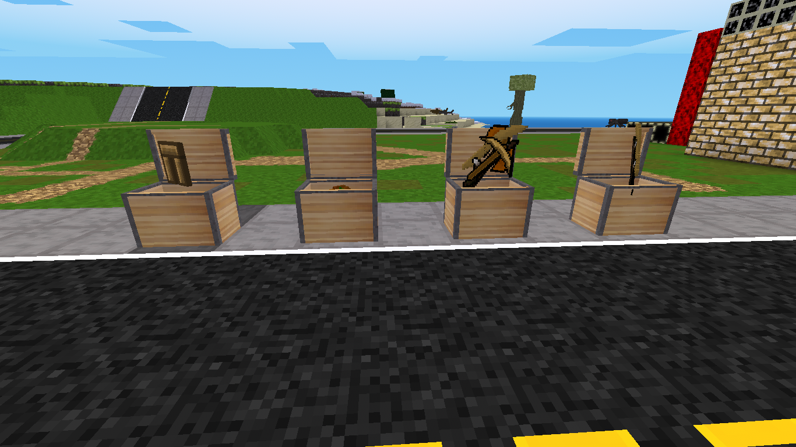

Chests that will spawn items when the chest is opened. The chest will close after a set amount of time. After it closes you can open again and the items will spawn again. There is no craft for them. They are meant for servers to place around their world for helping out players. There's 4 different chests. An armor chest, a food chest, a tool chest and a weapons chest. They all look the same so you never know what you are getting.

Top